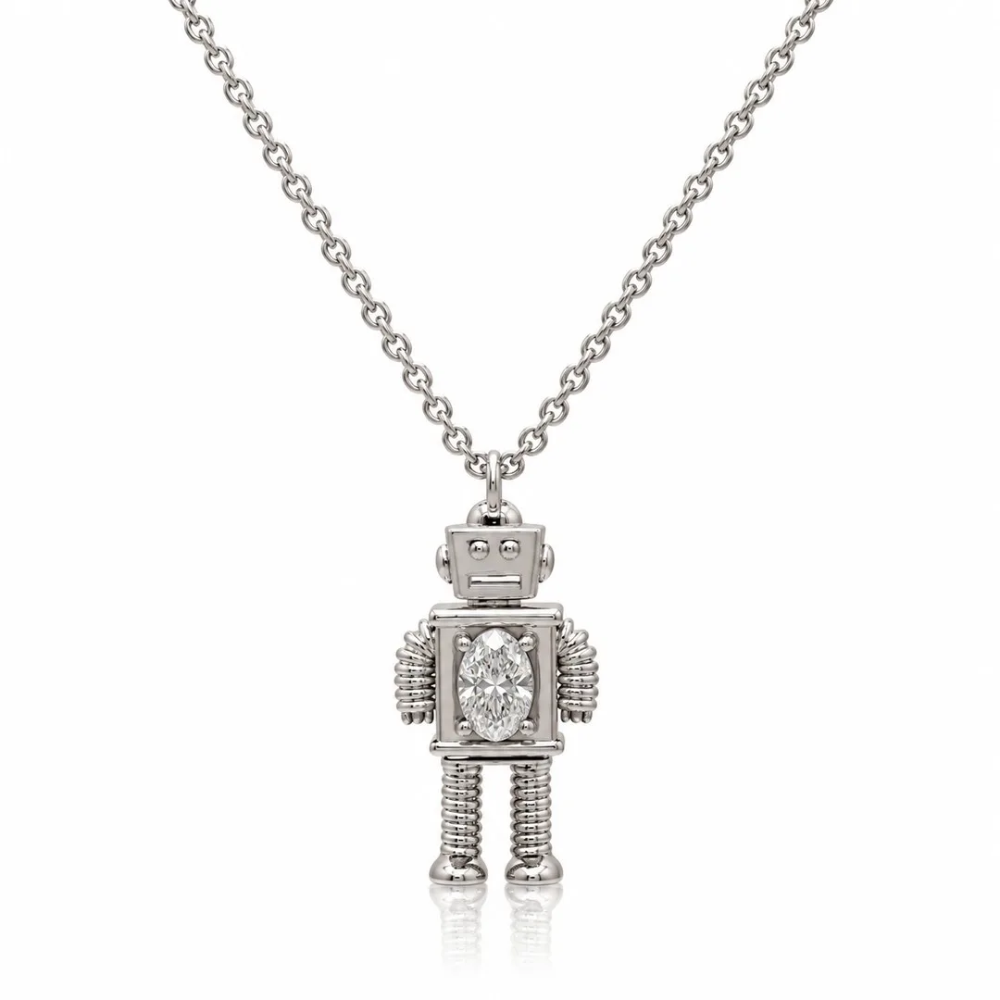
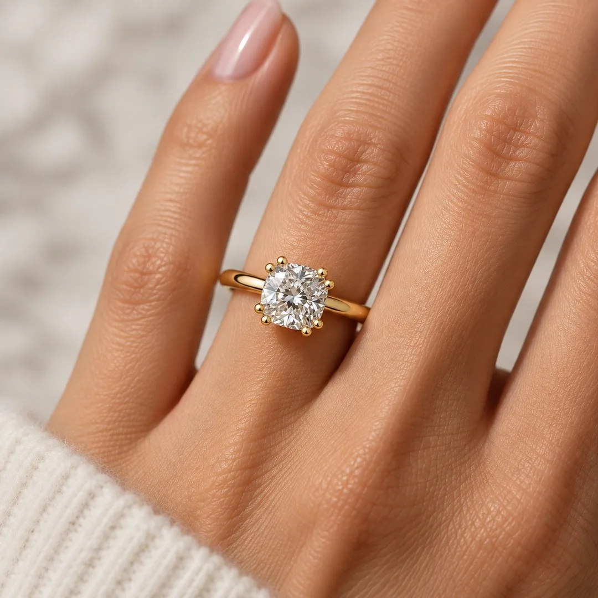
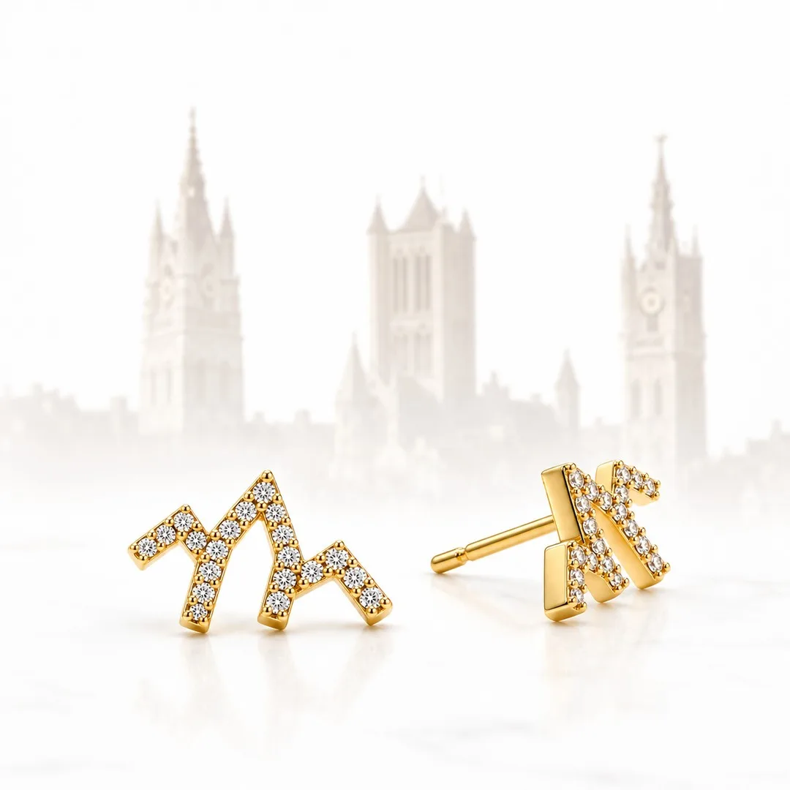
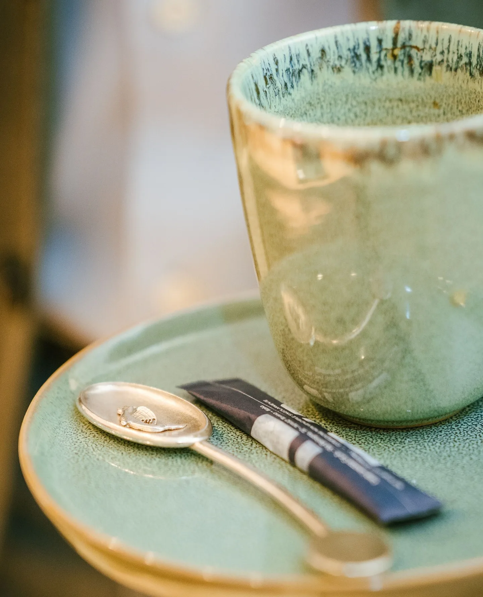
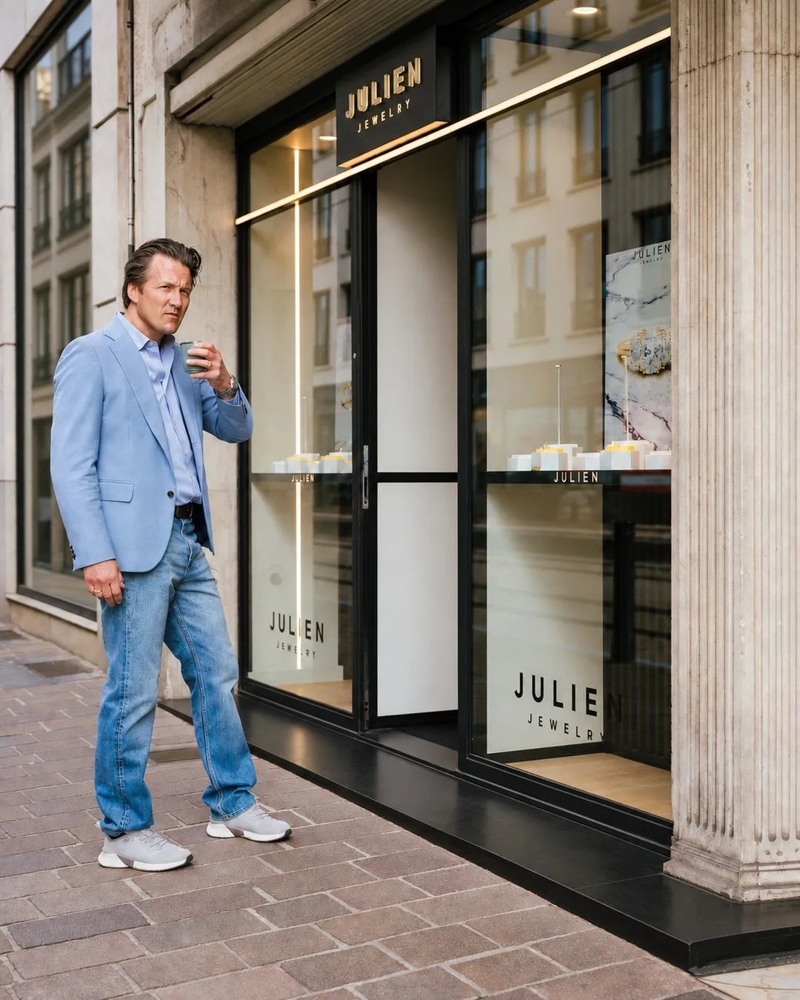

Manchetknopen
De Belfortdraak op je mouw
Handgemaakt in zilver, met de draak die al eeuwen over onze stad waakt.

Verlovingsringen, trouwringen en oorbellen, met de hand gemaakt in mijn atelier in Gent. Elk stuk uit de collectie is uniek.
Roze, blauw, groen of geel. Kies een kleur en kijk wat ik er de laatste weken mee maakte. Niets gevonden in jouw tint? Dan beginnen we gewoon bij een schets.

Een toi et moi: een roze en een witte diamant die elkaar vasthouden op geel goud. Twee stenen, twee karakters, één ring.
Zoals op mijn Instagram: "Harmony vs balance"
Vraag naar deze ringZo ontstond de Goldbot: een robotje in geel goud, met een groene diamant als hart. Klein genoeg om elke dag te dragen, en met meer persoonlijkheid dan de meeste hangers.

A little mechanical. A little human. A brilliant heart.Zijn broertje in wit goud, met een ovale diamant
 Meet the Goldbot
Meet the Goldbot
Een greep uit de collectie trouwringen, met de prijs zoals in mijn webshop, btw inbegrepen. Goud, maat en afwerking bekijken we samen in de winkel.


Sinds 2011 staat mijn werkbank in Gent. Na vijftien jaar heb ik nog altijd evenveel goesting om te maken, te groeien en te doen wat ik het liefste doe.
Je vertelt wat je zoekt, of waar je over twijfelt. Een verlovingsring, jullie trouwringen, iets voor jezelf.
Ik teken je juweel eerst uit, zodat je ziet wat het wordt. Klopt het, dan gaan we verder.
Daarna maak ik het in het atelier. Uniek, met de hand, en enkel voor jou.
Net als ik. De draak van het Belfort en de Gentse torens zitten in een paar van mijn stukken. Een beetje Gent, om elke dag te dragen.
Handgemaakt in zilver, met de draak die al eeuwen over onze stad waakt.

Kleine oorknopjes in goud met diamantjes. Net in een nieuwe versie.

Maar over het lepeltje, met de Belfortdraak erop. Wie mij volgt, weet dat koffie hier serieus genomen wordt.

Ontzettend goed ontvangen en geholpen door de meest gepassioneerde juwelier uit Gent en omstreken.Paulien Cardinaels, op Google
"Julien heeft ons fantastisch geholpen met de keuze voor een ring. Een absolute aanrader voor wie een persoonlijke aanpak wil en op zoek is naar juwelen met karakter."
"Topjuwelier! We waren op zoek naar de perfecte verlovingsring en dankzij het deskundig advies, geduld en oog voor detail hebben we die gevonden."
"Julien is een man waarbij je zijn passie voelt in zijn handgemaakte juwelen. Mijn man en ik hebben onze trouwring bij hem gekocht."
Hier staat mijn werkbank, hier ontmoet ik zoveel fijne mensen. Kom gerust binnen, of stuur me eerst een berichtje zodat ik tijd voor je maak.

Ik maakte deze demo voor jullie om te tonen wat er kan. Na een kort gesprek maak ik er iets veel persoonlijkers van, helemaal naar jullie wens.
Vrijblijvend. Ik kom langs of we bellen.
Op maat, op jullie eigen domein.
Geen voorschot. Jullie betalen pas als alles klaar is.
Hosting, domeinnaam en kleine wijzigingen, zoals nieuwe openingsuren.
Omdat een voorbeeld meer zegt dan een mail. Zo zien jullie meteen wat er kan, en het kost jullie niets.
Nee. Het gesprek is vrijblijvend. Vinden jullie het niks, dan is het daarmee gedaan.
Na ons gesprek staat jullie site binnen 10 tot 14 dagen online.
Zeker. Jullie domeinnaam kan gewoon blijven, de nieuwe site komt in de plaats van de oude.
Nee, dat doe ik op basis van ons gesprek. Eigen foto's zijn mooi meegenomen, maar niet nodig om te starten.